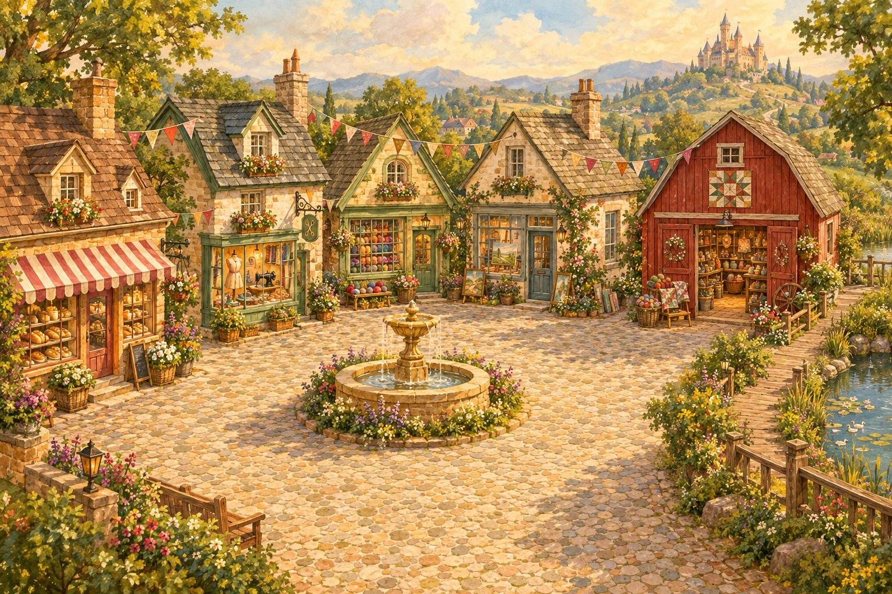
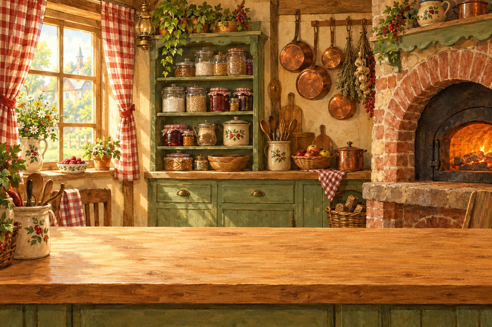
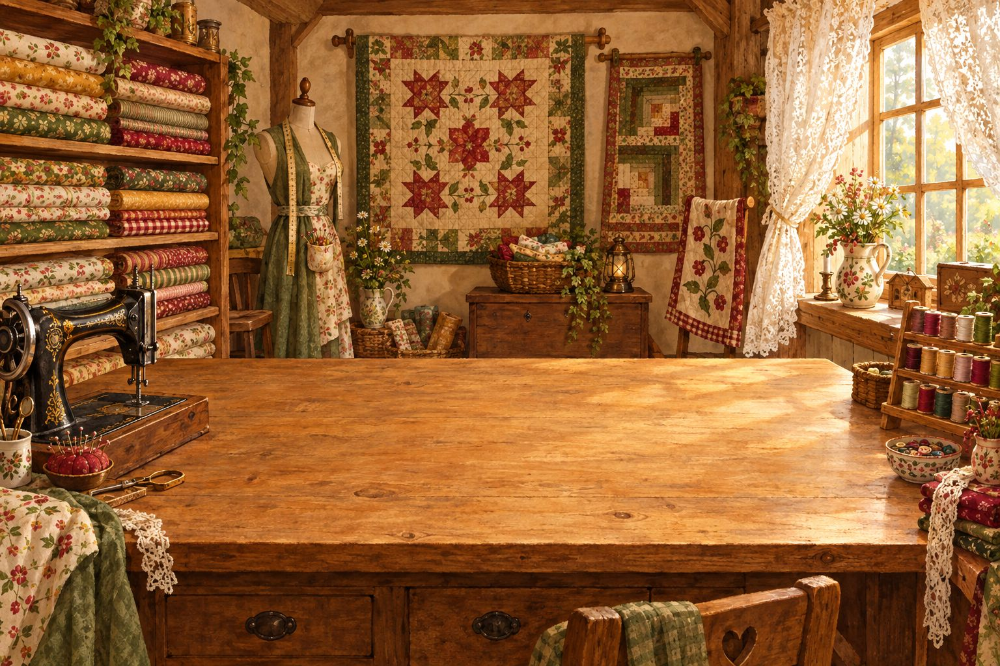
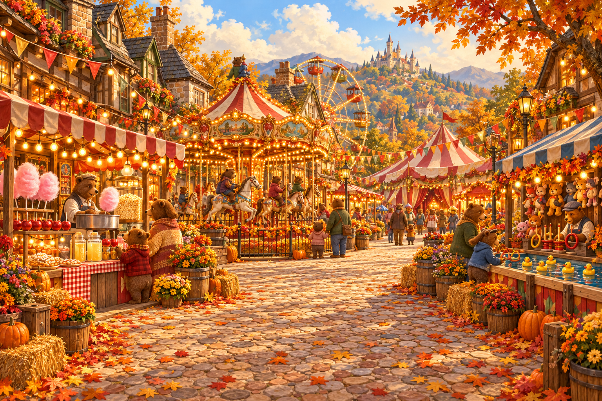
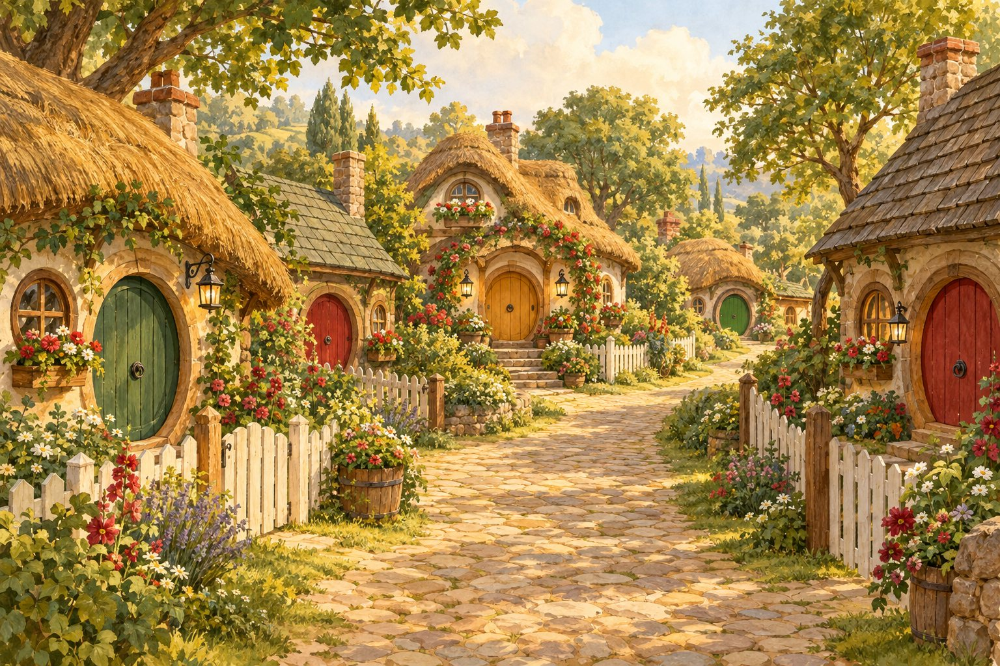
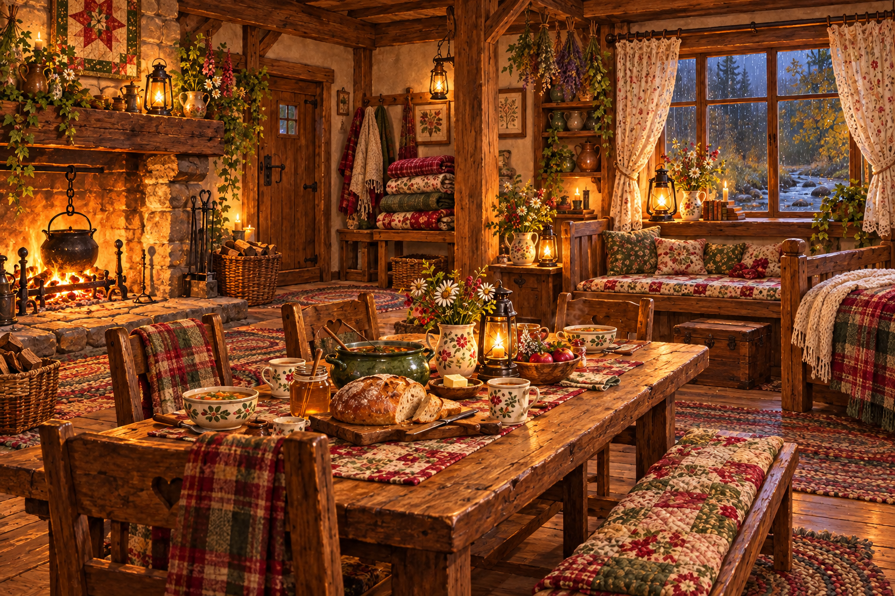
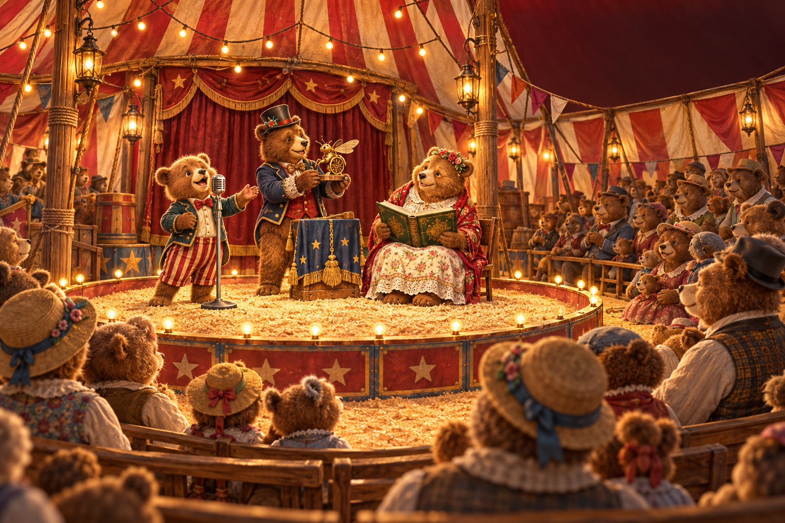
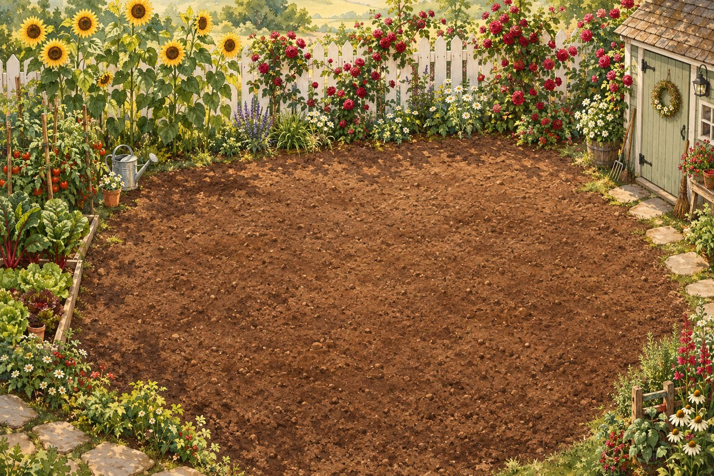
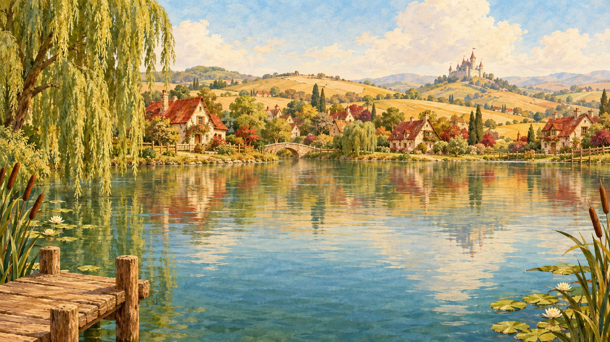

Welcome to
Honeybrook
Craft Fair
Make yourself at home in Honeybrook. Bake, stitch, paint, garden, fish, and keep bees on your way to a blue ribbon, and hear the story of Goldilocks and Bear Hollow one chapter at a time.
Best with sound on. Your game saves automatically.

AMELIA & TOM’S TOWN
Honeybrook
A gentle walk around town · Visiting places does not use up your day



HONEYBROOK FAIR MIDWAY
The Little Carnival
Hover over a stand or attraction to explore.
🎟 Carnival tickets0
The Fair is part of Honeybrook. Homes and gathering places are just across the map.


HONEYBROOK
A Cozy Home



Day 1MorningSunny
Fair in 4 days
20
0
20%
Turn your phone sideways for the best view of Honeybrook.